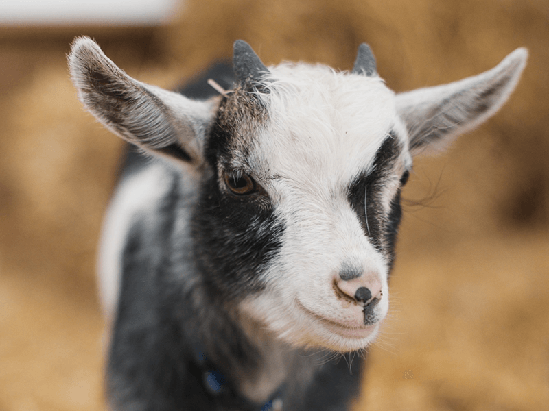

We have three sheep. They are not very famous, but we still love them.
There is a story about these sheep. The tow young ones, Trom and Bone (which is called bone because he's bony) are twins. Their father, Jelly, had died a week after they were born. Their mother, Anne, didn't want to take care of two children, so she chose Trom and fed only him. At first, we thought that only Trom was born, but after two days we found Bone lying on the ground near a tree. We fed him and he returned to his normal mood. Since then, we feed him every morning and evening.
In the image, you can see Anne and Trom together.

And here you can see Bone.
